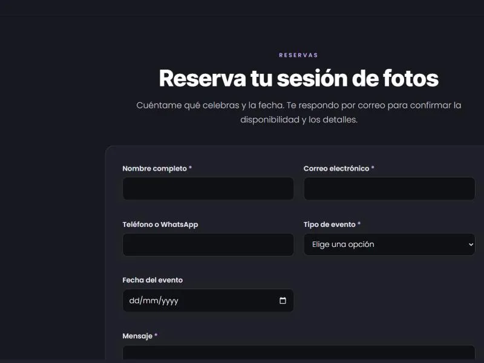

Esta guía está escrita para alguien que no sabe nada de programación. Cada concepto se explica primero con una comparación de la vida diaria, después con un diagrama y al final con lo que se hizo exactamente en tu sitio. No hace falta leerla de una sola vez: cada parte se entiende por separado.
Los recuadros de colores tienen un significado fijo:
public/descargas: sí se pueden subir desde ya.Imagina que una clienta escribe en su celular la dirección de tu sitio. En menos de un segundo ocurren cuatro cosas:
index.html. El navegador lo lee, ve que necesita estilos, fotos y scripts, y los pide también.| Concepto | Comparación | En tu caso |
|---|---|---|
| Dominio | La dirección de tu casa. Es fácil de recordar y se alquila por año. | Por ejemplo jenifferphotography.com o jenifferphotography.com.ni. |
| Hosting | El terreno y la casa: una computadora encendida las 24 horas, conectada a internet, donde viven los archivos del sitio. | Un hosting en Nicaragua con soporte para Node.js. |
| DNS | La guía telefónica que dice «esta dirección corresponde a este terreno». | Se configura en el panel donde compres el dominio. |
| Servidor web | El recepcionista de la casa: atiende cada visita y entrega lo que piden. | El programa Node.js de la carpeta server/. |
HTTP es el idioma con el que el navegador y el servidor se hablan. El problema es que viaja sin cifrar: es como mandar una postal, que cualquiera en el camino (la red Wi-Fi de un café, por ejemplo) puede leer o incluso cambiar.
HTTPS es lo mismo, pero dentro de un sobre sellado: los datos viajan cifrados y el navegador comprueba con un certificado que de verdad está hablando con tu sitio y no con un impostor. Es el candado 🔒 junto a la dirección.
En un restaurante, el comedor es lo que ve el cliente (mesas, decoración, menú) y la cocina es donde se prepara todo, sin que el cliente la vea.
public/: HTML (la estructura), CSS (el diseño) y JavaScript (las animaciones y galerías).server/: decide qué archivos entregar, con qué protección de seguridad y por cuánto tiempo el navegador puede guardarlos.JavaScript nació para funcionar solo dentro del navegador. Node.js es un programa que permite usar JavaScript también en el servidor, así un mismo lenguaje sirve para las dos partes. Express es una herramienta para Node.js que facilita crear servidores web: con pocas líneas se le dice «entrega los archivos de esta carpeta» o «responde a esta dirección».
Elegiste bien: tener el sitio en Node.js te permite agregar en el futuro funciones de servidor (un panel, reservas en línea) sin cambiar de tecnología.
Git es un programa que guarda la historia de cada cambio del proyecto. Cada vez que guardas un conjunto de cambios con un mensaje («Agregar botón de WhatsApp»), Git crea una foto del proyecto llamada commit. Puedes volver a cualquier foto anterior cuando quieras.
GitHub es un sitio web que guarda esa historia en la nube (es tu repositorio en línea), la protege si se daña tu computadora y permite revisar los cambios antes de aceptarlos.
main). Si sale mal, se descarta.main. Ahí se ven los cambios y las pruebas automáticas se ejecutan antes de aceptarlos.
El formulario obligaba al servidor a recibir, revisar, guardar y enviar por correo los datos de cada persona. Eso significaba proteger esos datos, configurar una cuenta de correo con contraseña y mantener más código. Con el botón, la clienta habla contigo directamente por el canal que más se usa en Nicaragua, y tu servidor ya no recibe ningún dato personal.
Es un enlace normal con el formato oficial de WhatsApp:
https://wa.me/50584329491?text=Hola%20Jeniffer%2C%20quiero%20informaci%C3%B3n…
wa.me es el dominio oficial de WhatsApp para abrir chats.505 es el código de país de Nicaragua y 84329491 tu número, todo junto, sin el signo + ni espacios.?text= es el mensaje que aparece ya escrito para que la clienta solo pulse «Enviar».%20 es un espacio, %2C una coma y %C3%B3 la letra «ó».En el celular abre la aplicación de WhatsApp; en la computadora, WhatsApp Web o la app de escritorio.
public/index.html (busca wa.me) y el de precios en public/js/sitio.js (línea que empieza con var WHATSAPP). En sitio.js el mensaje se escribe normal y el código lo codifica solo con encodeURIComponent. Si cambias el número, cámbialo también en el JSON-LD de index.html ("telephone").La marca aparecía de cuatro formas distintas («Jeniffer Valle Fotografía», «Jeniffer Fotografía», «Jeniffer fotografía» y el subtítulo «fotografía»). Ahora es Jeniffer Photography en todos lados: el subtítulo de la portada, los rótulos, el nombre para Google, para Facebook y WhatsApp al compartir el enlace, el ícono del celular y la página de error.
Hay tres cosas que se dejaron a propósito:
Además, se agregó Nicaragua al título, a la descripción y a los datos estructurados, junto con tu teléfono. Esto es SEO local: ayuda a aparecer cuando alguien de Nicaragua busca fotógrafas.
Se midió la carga del sitio antes y después, en las mismas condiciones, sin desplazarse por la página:
* Sin contar lo que se bajaba de servidores externos, que el navegador no permite medir: el total real era mayor. Servidores externos usados: antes 5, ahora 0.
Un sitio más liviano carga más rápido, sobre todo con datos móviles o señal débil, gasta menos datos de tus clientas y Google lo posiciona mejor. Estas son las técnicas aplicadas, con su comparación:
| Técnica | Comparación de la vida diaria | Qué se hizo |
|---|---|---|
| Carga diferida (lazy loading) | Un mesero no sirve el postre cuando te sientas; lo trae cuando llegas a él. | La galería en espiral y la parallax se activan cuando el visitante se acerca a ellas. Las fotos de las galerías de bodas, quinceaños y cumpleaños se descargan al abrirlas. |
| Miniaturas | No imprimes una foto en tamaño póster para ponerla en un llavero. | Donde las fotos se ven pequeñas (máximo 160 px) se usan versiones de 480 px: 824 KB en lugar de unos 5,5 MB. |
| Todo desde tu dominio | Comprar todo en una sola tienda en vez de ir a cinco tiendas distintas. | Las fuentes (antes de Google), Three.js y GSAP (antes de Cloudflare), Bootstrap (antes de jsDelivr) ahora están en tu servidor. Cada servidor externo exigía una conexión nueva y, si uno fallaba, el sitio se veía roto. |
| Quitar lo que no se usa | Vaciar la maleta de cosas que nunca usas en el viaje. | Bootstrap pasó de 227 KB a 11 KB con PurgeCSS (que borra las reglas no usadas). jQuery (87 KB) se eliminó: solo servía para 10 clics. |
| defer en los scripts | Abrir la tienda mientras terminas de acomodar el depósito. | Los scripts se descargan mientras la página se dibuja y se ejecutan después, sin dejar la pantalla en blanco. |
| Caché del navegador | Guardar el número de alguien en tus contactos para no buscarlo cada vez. | Fotos guardadas 30 días; fuentes y librerías 1 año; HTML, CSS y JS se revisan cada vez (respuesta mínima si no cambiaron), así los cambios se ven al instante. |
| Compresión gzip | Empacar la ropa al vacío para que ocupe menos. | El servidor comprime HTML, CSS y JS: pesan de 3 a 5 veces menos al viajar. |
Esta parte explica cada punto de la primera imagen que compartiste y cómo se aplica a tu sitio.
Una credencial es cualquier dato que da acceso a algo: contraseñas, la clave de tu correo, la llave de API de un servicio (un código que una aplicación usa para identificarse ante otra) o un token (una contraseña temporal para programas).
.envLas credenciales se guardan en un archivo llamado .env («environment», entorno), que vive solo en tu computadora y en el servidor, y que Git tiene prohibido subir. El código no contiene la contraseña: la lee del entorno al arrancar.
# .env — NUNCA se sube a GitHub SMTP_PASS=mi-contraseña-secreta // En el código solo aparece el nombre, nunca el valor: const clave = process.env.SMTP_PASS;
Para que otros sepan qué variables existen sin ver los valores, se sube un archivo de ejemplo, .env.example, con valores inventados.
.env, llaves (*.pem, *.key), certificados, bases de datos y respaldos están prohibidos en .gitignore./.env a un visitante.Todo lo que llega de un visitante (lo que escribe en un formulario, lo que pone en la dirección web) puede ser malicioso. Los dos ataques más conocidos son:
Una base de datos se consulta con un idioma llamado SQL. Si el programa pega el texto del usuario directamente dentro de la consulta, el atacante puede escribir código en lugar de un dato:
-- El programa arma la consulta pegando lo que escribió el usuario: SELECT * FROM clientes WHERE nombre = '' OR '1'='1' -- '1'='1' siempre es verdad: ¡devuelve TODOS los clientes!
La defensa son las consultas parametrizadas: el dato se envía por separado y la base de datos lo trata siempre como texto, nunca como instrucciones.
Si un sitio muestra en pantalla lo que escribió un usuario sin limpiarlo, un atacante puede escribir un script que se ejecuta en el navegador de cada persona que vea esa página (por ejemplo, para robar sus sesiones):
Comentario: ¡Qué lindas fotos! <script>enviarDatosAlAtacante()</script>
La Content-Security-Policy es una instrucción que el servidor le da al navegador: «solo ejecuta scripts que vengan de mi propio dominio; ignora cualquier otro». Es como una fiesta con lista de invitados en la puerta: aunque alguien logre colarse un papel con instrucciones, el guardia no lo deja entrar.
Tu CSP es la más estricta posible porque, tras la optimización, todo viene de tu dominio. Además prohíbe código dentro de atributos como onclick, prohíbe que cualquier formulario envíe datos (form-action 'none') y prohíbe que otro sitio muestre el tuyo dentro de un marco para engañar a los visitantes (clickjacking).
Esconder un botón con CSS o JavaScript no protege nada: cualquiera puede abrir las herramientas del navegador o escribir la dirección a mano. El servidor debe comprobar, en cada petición, que esa persona tiene permiso.
El fallo típico se llama IDOR (referencia directa insegura a objetos): una clienta ve su factura en /factura/124, cambia el número a /factura/125 y ve la de otra persona, porque el servidor no comprobó de quién es.
.env) el servidor se niega a entregarlos, y hay una prueba que lo verifica.La mayoría de los hackeos no rompen el código: adivinan o roban una contraseña. La verificación en dos pasos (2FA o MFA) pide, además de la contraseña, un código que cambia cada 30 segundos en tu celular. Aunque alguien robe tu contraseña, no puede entrar sin tu celular.
Debes activarla en: GitHub, el panel del hosting, el registrador del dominio (si alguien entra ahí, puede redirigir tu dominio) y tu correo (desde el correo se recuperan todas las demás contraseñas).
La deuda técnica es como la deuda de una tarjeta de crédito: cada atajo que se toma hoy («luego lo arreglo») se paga más adelante con intereses, en forma de errores y horas de trabajo. Estos son los cuatro puntos de tu segunda imagen.
Una librería (o dependencia) es código escrito por otras personas que se agrega al proyecto. Ahorra trabajo, pero cada una es un riesgo: puede tener fallos de seguridad, dejar de mantenerse o cambiar y romper tu sitio al actualizarse. Hubo casos reales de librerías populares a las que un atacante les metió código malicioso.
express (el servidor), helmet (seguridad) y compression (compresión). Todas son estándar y muy mantenidas.devDependencies y no se instalan en el servidor.Si la misma lógica está en tres lugares y hay que cambiarla, es fácil olvidar uno. Lo correcto es escribirla una sola vez y reutilizarla.
server/config.js es el único lugar donde se leen las opciones del servidor.public/js/fotos.js es la única lista de fotos; las miniaturas se calculan a partir de ella.JF_alAcercarse se escribió una vez y la usan las dos galerías.npm run recursos), no a mano.Tu «yo» del futuro, o la persona que contrates, debe poder entender el proyecto sin preguntarte. Tu repositorio tiene: README.md (instalación, comandos y variables), la carpeta docs/ (arquitectura, API, publicación, pruebas, SEO y mantenimiento), CHANGELOG.md (qué cambió en cada versión), el PDF con cada línea de código explicada y esta guía.
Cada semana se descubren fallos de seguridad en algún software. Los autores publican una versión corregida (un parche), pero de nada sirve si tu proyecto sigue con la versión vieja.
Dependabot es un robot gratuito de GitHub. Ya está configurado en tu proyecto (.github/dependabot.yml). Cada lunes revisa si hay versiones nuevas y, si las hay, abre un Pull Request con la actualización. Las pruebas automáticas se ejecutan solas sobre ese PR.
Además, CodeQL (el analizador de seguridad de GitHub) revisa el código en cada cambio y cada lunes, y la integración continua ejecuta npm audit, que compara tus librerías con la base de datos mundial de vulnerabilidades.
«Producción» es el sitio real, el que ven tus clientas. Esta parte explica la tercera imagen.
Editar un archivo directamente en el hosting es como cambiar una llanta con el carro en marcha: si te equivocas, las clientas ven el error al instante, no queda registro de qué cambiaste y no hay forma fácil de deshacerlo.
El flujo correcto tiene tres «lugares»:
Un entorno de pruebas (staging) es una copia privada del sitio donde se prueba antes de publicar. En un proyecto como el tuyo, tu computadora con npm run dev cumple ese papel. Si algún día lo necesitas, el mismo hosting puede tener un subdominio de pruebas (pruebas.tudominio.com).
Una prueba automática es un pequeño programa que revisa que algo funcione, por ejemplo «el botón de WhatsApp apunta al número correcto». Tu proyecto tiene 50 pruebas que se ejecutan con npm test. En GitHub, la integración continua (CI) las ejecuta sola en cada cambio, en dos versiones de Node.js.
fotos.js, y las galerías dejaron de funcionar. La prueba en el navegador lo detectó antes de publicar. Para que no vuelva a pasar, se agregó una prueba que revisa la sintaxis de todos los scripts: se comprobó que falla con un archivo roto y pasa con el correcto.Tu servidor tiene la dirección /api/salud, que responde «ok» si todo funciona. Un servicio de monitoreo gratuito la consulta cada 5 minutos y te avisa si deja de responder:
https://tudominio.com/api/salud → intervalo de 5 minutos.Los errores del servidor se registran en formato JSON (una línea por evento) y se pueden ver en el panel del hosting o con pm2 logs. Servicios como Sentry agregan alertas detalladas de errores; para un portafolio, el monitor de disponibilidad es suficiente para empezar.
Discos que se dañan, hostings que cierran, un error al editar: tarde o temprano algo falla. La regla profesional se llama 3-2-1:
La mayoría de tus clientas verá el sitio en el celular, muchas veces con datos móviles. Además de lo explicado en la sección 2.3, el sitio usa versiones recortadas de las fotos de portada para celular, fotos WebP (un formato que pesa 25–35 % menos que JPG con la misma calidad) y un diseño adaptable probado en pantallas de 375 px de ancho sin desplazamiento horizontal.
| Cualquier persona puede… | Nadie, excepto tú, puede… |
|---|---|
| Ver el código y las fotos del repositorio. Descargar una copia. Ver el historial de cambios. | Modificar el repositorio. Borrarlo o cambiar su configuración. Publicar en tu sitio. |
Un repositorio público sirve como portafolio de trabajo profesional y además habilita gratis herramientas de seguridad de GitHub. Pero «público» no significa «libre de usar»: tu archivo LICENSE dice «Todos los derechos reservados». Legalmente, nadie puede copiar tus fotos ni tu código sin permiso por escrito, aunque pueda verlos.
.gitignoreEl archivo .gitignore es la «lista negra» de Git: lo que aparece ahí nunca se incluye en un commit, aunque esté en la carpeta. Esto contiene el tuyo y por qué:
| Línea | Qué es y por qué no se sube |
|---|---|
node_modules/ | Las librerías descargadas por npm. Pesan cientos de MB y se reinstalan con npm install usando la lista exacta de package-lock.json. |
.env, .env.* | Variables de entorno: el lugar de las contraseñas. Lo más importante de la lista. |
!.env.example | El signo ! es una excepción: la plantilla sin valores reales sí se sube. |
*.pem, *.key, *.p12, *.pfx | Llaves privadas y certificados (por ejemplo, de HTTPS o de acceso SSH al servidor). Quien tenga una llave puede hacerse pasar por ti. |
*.sqlite, *.db | Bases de datos: podrían contener datos de clientes. |
*.bak, *.zip | Respaldos y comprimidos: suelen contener copias completas del sitio, incluido el .env. |
data/, logs/, *.log | Datos y registros que el servidor genera al funcionar (pueden incluir IP de visitantes). |
coverage/, docs/*.html | Archivos que se generan con un comando; se pueden recrear en cualquier momento. |
.DS_Store, Thumbs.db, .idea/, .vscode/* | Archivos del sistema operativo y del editor, personales de cada computadora. Se exceptúan dos ajustes de VS Code útiles para todos (las extensiones recomendadas y la carpeta de Live Server). |
.git/info/exclude, un archivo que funciona igual que .gitignore pero que nunca se sube. Ahí quedaron las copias de prueba que hay en tu carpeta del proyecto.Git guarda la historia completa. Los commits anteriores tenían una línea automática de coautoría que nombraba la herramienta con la que se generaron, y el Pull Request #1 también la mencionaba. Reescribir el historial y subirlo encima quita la mención de los commits nuevos, pero GitHub conserva para siempre los commits originales dentro de cada Pull Request. La única forma de que no quedara ningún rastro era:
Se perdieron la página del PR #1 y su historial de pruebas en GitHub, pero no el código: todo está en tu computadora y en el historial limpio.
| Función | Qué hace |
|---|---|
| Secret scanning | Detecta contraseñas y llaves en el código y te avisa. |
| Push protection | Bloquea una subida si contiene una contraseña, antes de que se publique. |
| Dependabot alerts y updates | Avisa de librerías vulnerables y abre PRs para actualizarlas. |
| CodeQL | Analiza el código buscando vulnerabilidades. |
| CI (pruebas) | Ejecuta las 50 pruebas en cada cambio. |
git pull en lugar de subir archivos a mano.public/ y el archivo .htaccess aplica la misma seguridad y caché (opción D de docs/DESPLIEGUE.md). Pierdes la ruta /api/salud, pero todo lo visible sigue igual..com | .com.ni / .ni | |
|---|---|---|
| Quién lo administra | Registradores internacionales y la mayoría de hostings. | NIC.ni, el registro oficial de dominios de Nicaragua. |
| Ventaja | Conocido en todo el mundo; útil si trabajas con clientes de fuera. | Señal clara de negocio nicaragüense; Google lo asocia a Nicaragua. |
| A tener en cuenta | Suele ser más barato. | Puede pedir requisitos o documentos locales. |
Una buena práctica es comprar ambos y hacer que uno redirija al otro, para que nadie use tu nombre.
En el panel donde compraste el dominio hay una sección DNS. Ahí se crean «registros» que dicen adónde apunta cada nombre:
www lleve al mismo lugar.https://TU-DOMINIO.com por tu dominio real en todo el proyecto (en VS Code: Ctrl + Shift + H), ejecuta npm run verificar y sube el cambio a GitHub.server/index.js.NODE_ENV=production, TRUST_PROXY=true, SITE_URL=https://tudominio.com.git clone https://github.com/AleReyes77/jeniffer-photography-web.git .https://tudominio.com/api/salud: debe decir "estado":"ok".git pull, Run NPM Install y Restart. Nunca edites archivos en el servidor.Si en lugar de cPanel contratas un VPS, el proyecto incluye la configuración de PM2 (ecosystem.config.cjs), que mantiene el sitio encendido y lo reinicia solo si falla. Los pasos están en docs/DESPLIEGUE.md.
https://tudominio.com/sitemap.xml.docs/SEO.md).public/descargasSí, puedes y conviene subirlos desde ya, antes de contratar el hosting. Los archivos de precios son parte del sitio igual que las fotos: se guardan en el proyecto, se suben a GitHub y viajan al hosting cuando publiques.
El sitio ya está preparado: al cargar, revisa si los archivos existen. Si no existen, los botones de precios cambian solos a «Pídelos por WhatsApp» y abren un chat con el mensaje «Hola Jeniffer, quiero conocer los precios de tus servicios». Así nadie ve un error.
precios-servicios.pdf (botón «Descarga el PDF») y precios-servicios.jpg (botón «Descarga la imagen»).public/descargas/ del proyecto (ahí está el archivo LEEME.txt con estas instrucciones).npm run dev, abre http://localhost:3000 y pulsa los dos botones de precios: deben descargar tus archivos.git add public/descargas
git commit -m "Agregar lista de precios"
git push
git pull. Revisa que el PDF no contenga datos privados (por ejemplo, tu cédula o la dirección de tu casa): será descargable por cualquiera.TU-DOMINIO.com reemplazado por el dominio real en todo el proyecto.public/descargas/.npm run verificar en verde y CI de GitHub en verde.https:// y candado 🔒./api/salud responde "estado":"ok"./api/salud.